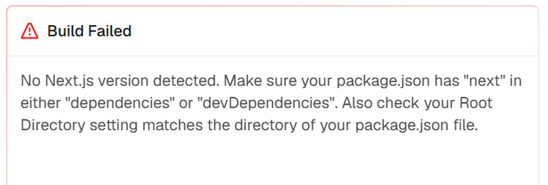
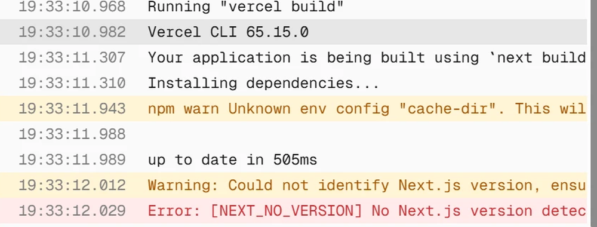
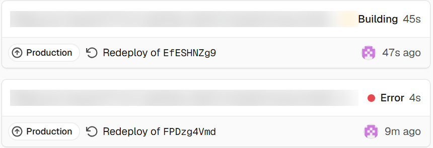
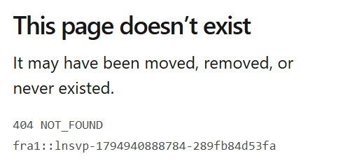
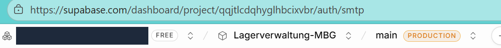
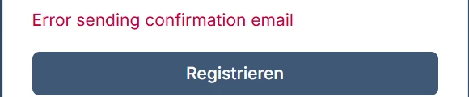

Wir haben eine Web-App zur Verwaltung von Arztpraxen entwickelt (Termine, Wartezimmer, Patientenakte, Benachrichtigungen). Dabei sind – wie bei jedem Lernprojekt – viele Fehler passiert. Dieses Dokument zeigt jeden Fehler einzeln: Was passiert ist, wie die Fehlermeldung lautete, woran es lag, wie wir ihn behoben haben und was wir daraus gelernt haben. Fehler sind hier kein Makel, sondern der Nachweis für den Lernprozess.
19Fehlerfälle dokumentiert
13gelöst und erneut getestet
4schwere Fehler (Wirkung „groß“)
2noch offen
Die Zahlen auf einen Blick
Welche Art von Fehler?
Einstellung
3
Wissenslücke
8
Denkfehler (Logik)
2
Vorgehen
1
Sicherheit
1
Grenzen des Systems
4
Wie ging es aus?
gelöst
13
vermieden
1
umgangen
3
offen
2
Wer hat den Fehler entdeckt?
System
9
Team
5
KI
5
Wie stark hat er uns aufgehalten?
Klein
9
Mittel
6
Groß
4
Auffällig: Mit 8 von 19 Fällen waren Wissenslücken bei neuen Werkzeugen die häufigste Fehlerart. Nur 5 Fälle haben wir selbst beim Ausprobieren bemerkt, bei 9 hat das System den Fehler selbst gemeldet. Genau lesen lohnt sich.
Unser Ablauf bei jedem Fehler
1
Fehler bemerken
Meldung, rotes Feld, falsches Verhalten – oder eine Frage wie „Warum steht das da?“
›
2
Meldung genau lesen
Der Text nennt oft schon Ort und Grund. Nichts raten.
›
3
Ursache eingrenzen
Protokolle lesen, einen kleinen Test bauen, prüfen: Ist es der Test oder das Programm?
›
4
Lösung umsetzen
Eine Sache nach der anderen ändern, nicht alles auf einmal.
›
5
Erneut testen
Auch den Wiederholungsfall: Was passiert beim zweiten Klick?
›
6
Gelerntes festhalten
In einem Satz aufschreiben – so wie in diesem Dokument.
So liest du dieses Dokument
Fehlerart
Einstellung
Etwas war falsch eingestellt oder am falschen Ort eingetragen.
Wissenslücke
Eine neue Technik oder Version funktioniert anders, als wir dachten.
Denkfehler (Logik)
Der Ablauf im Programm war nicht zu Ende gedacht.
Vorgehen
Fehler in der Arbeitsweise, z. B. zu früh „fertig“ gemeldet.
Sicherheit
Geheimes (Passwörter, Schlüssel) wurde nicht sicher behandelt.
Grenzen des Systems
Schutzregeln und Limits der benutzten Dienste.
Ergebnis
gelöst
Fehler behoben und danach erneut getestet.
vermieden
Fehler ist gar nicht erst aufgetreten, weil wir vorher nachgelesen haben.
umgangen
Ursache bleibt bestehen, wir haben einen anderen Weg gefunden.
offen
Noch zu erledigen (siehe Abschnitt „Offene Punkte“).
Entdeckt durch
System
Das System hat selbst eine Fehlermeldung ausgegeben (Build, Test, Datenbank).
Team
Wir haben es beim Ausprobieren der laufenden App bzw. der Webseiten bemerkt.
KI
Die KI hat es durch eigene Prüfung, Dokumentation oder Rückblick entdeckt.
Wirkung
●●●●●●●●●
klein · mittel · groß: wie stark der Fehler das Projekt aufgehalten hat.
Alle Fehlerfälle auf einen Blick
Ein Klick auf Nummer oder Titel springt zur ausführlichen Fehlerkarte.
Die Reihenfolge ist ungefähr chronologisch. Uhrzeiten stammen von unseren Bildschirmfotos. Die Kürzel (F1 …) führen zu den Fehlerkarten, die Farbe zeigt die Fehlerart.
1. Planung
Lastenheft und Fragebogen mit 26 Fragen. Alle Anforderungen sind schriftlich festgehalten.
2. App-Gerüst bauen
Webseiten, Kalender, Termine, Patientenakte. Der Build zeigte die ersten Fehler.
Jede Karte folgt demselben Aufbau: Was ist passiert? → Fehlermeldung → Ursache und Lösung → Gelernt. Bildschirmfotos stammen aus der echten Arbeit; E-Mail-Adressen, Benutzernamen und Passwörter wurden geschwärzt bzw. nicht verwendet.
F1
Fast gescheitert, aber vorher nachgelesen: Next.js 16 ist anders
Was ist passiert?Für die App nutzen wir das Framework Next.js in der neuen Version 16. Die KI kennt vor allem ältere Versionen. Eine wichtige Datei heißt in Version 16 zum Beispiel nicht mehr middleware.ts, sondern proxy.ts.
FehlermeldungThis is NOT the Next.js you know. This version has breaking changes … Read the relevant guide in node_modules/next/dist/docs/
UrsacheDas Wissen der KI stammt teilweise aus älteren Versionen. Frameworks ändern sich schneller als das Wissen, das man im Kopf hat.
Lösung / UmgangBevor programmiert wurde, wurde die mitgelieferte Dokumentation gelesen. Danach haben wir proxy.ts und die neuen Seiten-Typen verwendet.
GelerntFehler vermeiden ist besser als Fehler beheben: Bei neuen Versionen zuerst die passende Dokumentation lesen.
F2
Selbst gebaute Design-Klassen funktionierten nicht (Tailwind 4)
Was ist passiert?Der Typ-Check meldete bei fast jeder Seite einen Fehler.
FehlermeldungType '"/aufgaben"' does not satisfy the constraint '"/"'
UrsacheDie Typen für die Seiten-Adressen werden von Next.js automatisch erzeugt. Diese Dateien waren veraltet bzw. noch nicht vorhanden – der Fehler lag nicht in unserem Code.
Lösung / UmgangZwischenordner .next gelöscht und den Befehl next typegen ausgeführt. Einen echten Typfehler (undefined statt Text) haben wir zusätzlich von Hand korrigiert.
GelerntNicht jeder Fehler steckt im eigenen Code. Manchmal sind automatisch erzeugte Dateien veraltet: neu erzeugen.
Was ist passiert?Ein automatischer Code-Prüfer meldete 14 Probleme in drei Arten.
FehlermeldungComponents created during render · setState synchronously within an effect · Do not use an <a> element to navigate
UrsacheWir hatten kleine Bausteine innerhalb anderer Bausteine definiert (sie werden dadurch bei jeder Anzeige neu gebaut), einen Wert direkt in einem Effekt gesetzt und normale Links statt der App-Links benutzt.
Lösung / UmgangBausteine nach außen verlagert, den Effekt begründet freigestellt und <Link> verwendet.
GelerntEin Code-Prüfer ist wie ein Korrekturleser: Er findet Muster, die später zu echten Fehlern führen.
F5
Der erste Datenbank-Test scheiterte am Test selbst
Was ist passiert?Beim Prüfen der Datenbank-Dateien in einer lokalen Test-Datenbank brach der Test ab.
Fehlermeldungerror: permission denied for table staff
UrsacheNicht die Datenbank-Dateien waren falsch, sondern unser Testaufbau: Ihm fehlten Standard-Rechte, die das echte Supabase automatisch hat.
Lösung / UmgangDie fehlenden Rechte im Test ergänzt. Danach liefen dieselben Dateien sowohl im Test als auch im echten Supabase-Projekt. Der Test prüfte u. a.: Eine fremde Praxis sieht keine Patienten.
GelerntWenn ein Test scheitert, zuerst fragen: Ist der Test falsch oder das Programm?
F6
Das Supabase-Projekt „Praxisverwaltung“ war nicht zu finden
Was ist passiert?Die Datenbank sollte in einem Supabase-Projekt „Praxisverwaltung“ liegen. Die Abfrage der Projekte zeigte aber nur ein anderes Projekt.
FehlermeldungProjekte: [ Lagerverwaltung-MBG ]
UrsacheDas neue Projekt war zu diesem Zeitpunkt noch nicht angelegt bzw. noch nicht mit dem Werkzeug verbunden.
Lösung / UmgangNach dem Anlegen die Liste erneut abgefragt: jetzt erschien „Praxisverwaltung“ (Region Irland, also in der EU). Bevor etwas gespeichert wurde, prüften wir, dass das Projekt wirklich leer ist.
GelerntImmer zuerst prüfen, ob man im richtigen Projekt arbeitet – sonst landen Tabellen und Daten im falschen System.
F7
Die KI darf sich selbst keine Dauer-Rechte geben
Grenzen des SystemsumgangenEntdeckt durch: SystemWirkung: ●●●klein
Was ist passiert?Bei jeder Aktion in Supabase und Vercel fragte das System: „Darf Claude … verwenden?“. Wir wollten das abschalten. Die KI versuchte, selbst eine Einstellungsdatei mit Freigaben ins Projekt zu legen – das wurde automatisch blockiert.
FehlermeldungPermission for this action was denied by the Claude Code auto mode classifier.
UrsacheDas ist eine gewollte Schutzregel: Eine KI darf ihre eigenen Berechtigungen nicht selbst erweitern.
Lösung / UmgangDie Datei wurde wieder entfernt. Dauerhafte Freigaben stellt der Mensch selbst im Menü neben dem Eingabefeld ein.
GelerntBerechtigungen gehören dem Menschen. Eine Sperre kann ein Schutz sein und kein Fehler.
F8
Wir kommen nicht überall heran: gesperrtes Netz, unsichtbare Geheimnisse
Grenzen des SystemsumgangenEntdeckt durch: SystemWirkung: ●●●klein
Was ist passiert?Ein lokaler Test gegen die echte Datenbank scheiterte. Außerdem konnte man geheime Einstellungen (z. B. Passwörter) in Vercel nicht auslesen.
Fehlermeldung…supabase.co:443 – connect_rejected (the egress proxy refused the connection)
UrsacheDie Entwicklungsumgebung darf nur freigegebene Server erreichen. Geheime Variablen zeigen aus Sicherheitsgründen keinen Wert an, auch nicht dem Besitzer.
Lösung / UmgangStatt lokal zu testen haben wir die veröffentlichte Seite geprüft und die Datenbank über ein freigegebenes Werkzeug getestet. Ob ein Passwort stimmt, zeigt nur ein echter Versuch.
GelerntIst der direkte Weg gesperrt, einen anderen Weg zum gleichen Ziel suchen – die Sperre nie umgehen.
F9
Die Webseite war nicht erreichbar: „Build Failed“ und 404
Was ist passiert?Beim ersten Veröffentlichen zeigte Vercel einen roten Fehler, die Adresse lieferte „404 – diese Seite existiert nicht“. Wir klickten mehrmals auf Redeploy – es blieb gleich.
FehlermeldungError: [NEXT_NO_VERSION] No Next.js version detected · 404: NOT_FOUND
UrsacheAuf dem Hauptzweig main lagen zu diesem Zeitpunkt nur Lastenheft und Fragebogen, noch kein Programmcode. „Redeploy“ baut immer den alten Stand noch einmal. Dazu war im Vercel-Projekt noch kein Framework eingestellt. Die Vorschau-Adresse zeigte kurz auf den alten Build und lieferte deshalb auch 404.
Lösung / UmgangVercel auf Next.js, Node 24 und Region Frankfurt eingestellt und den Pull Request mit dem Programmcode nach main zusammengeführt (Merge). Danach baute Vercel automatisch neu – fehlerfrei. Die Registrierungsseite war erreichbar.

Abb. 1 – Vercel: „Build Failed“ (Foto von 19:33 Uhr)

Abb. 2 – Build-Protokoll: Fehler NEXT_NO_VERSION

Abb. 3 – Mehrfaches „Redeploy“ desselben alten Stands

Abb. 4 – Ergebnis im Browser: 404
Gelernt„Redeploy“ ändert nichts am Inhalt. Neue Änderungen kommen nur über einen neuen Commit auf main. Und: Manchmal genügt Abwarten, bis der neue Build fertig ist.
Was ist passiert?Auf dem Foto der E-Mail-Einstellungen stand oben links „Lagerverwaltung-MBG“ statt „Praxisverwaltung“.
UrsacheZwei Supabase-Projekte lagen im selben Konto nebeneinander und wurden verwechselt. Die Einstellung hätte sonst dazu geführt, dass die Lager-App ihre Login-Mails als „Praxis Verwaltung“ verschickt.
Lösung / UmgangEinstellungen im richtigen Projekt gemacht und im falschen den benutzerdefinierten E-Mail-Versand wieder ausgeschaltet.

Abb. 5 – Adresszeile und Projektname zeigen „Lagerverwaltung-MBG“ (E-Mail-Adresse geschwärzt)
GelerntVor jeder Einstellung oben links prüfen, in welchem Projekt man ist. Ein Foto der Seite ist ein guter Beweis.
F11
E-Mail über Gmail: Fehler 535 – „Passwort nicht akzeptiert“
Was ist passiert?Beim Registrieren erschien „Error sending confirmation email“. Es kam keine Bestätigungs-Mail an – bei mehreren Versuchen.
Fehlermeldung535 5.7.8 Username and Password not accepted
UrsacheEingetragen war das normale Gmail-Passwort. Google erlaubt für Programme nur ein spezielles App-Passwort, und das gibt es erst mit „Bestätigung in zwei Schritten“ – meist mit Telefonnummer. Wir wollten das Konto nicht mit einer Telefonnummer verknüpfen. Die genaue Ursache stand im Protokoll von Supabase, nicht auf der Webseite.
Lösung / UmgangGmail aufgegeben. Alternativen verglichen (Brevo, Mailjet, Resend, eigene Domain). Für den Test die Bestätigungs-Mail abgeschaltet bzw. den eingebauten Versand von Supabase genutzt. Endgültiger Absender steht noch aus.

Abb. 6 – Fehlermeldung beim Registrieren (19:45 Uhr)
GelerntDie genaue Ursache steht oft im Protokoll des Systems. Und: Nicht jeder Dienst ist für jeden Zweck gedacht – ein persönliches Gmail-Konto ist kein Server für automatische Mails.
F12
Registrierung bricht ab, und nur 2 Mails pro Stunde
Grenzen des SystemsumgangenEntdeckt durch: TeamWirkung: ●●●mittel
Was ist passiert?Solange der Mailversand scheiterte, kam keine Registrierung zustande. Mit dem eingebauten Versand von Supabase gingen nur sehr wenige Mails pro Stunde.
FehlermeldungEmail limiter: 30 → 2/1h (Supabase-Protokoll, sobald kein eigener SMTP aktiv ist)
UrsacheSupabase nimmt die ganze Registrierung zurück, wenn die Bestätigungs-Mail nicht rausgeht (es entsteht dann kein Benutzer). Der eingebaute Versand ist absichtlich stark begrenzt (Missbrauchsschutz).
Lösung / UmgangFür die Testphase „Confirm email“ ausschalten, später einen eigenen Absender einrichten.
GelerntGrenzen eines Dienstes vor dem Testen nachlesen.
Was ist passiert?Zwei Skripte zum Einfügen der Testdaten brachen ab.
Fehlermeldungreturn type mismatch … Final statement returns text instead of uuid · column reference "status" is ambiguous
Ursache(1) In einer Wertetabelle war nur die erste Zeile als uuid gekennzeichnet – die Datenbank hielt die ganze Spalte für Text. (2) Ein Parameter hieß genauso wie eine Tabellenspalte, die Datenbank wusste nicht, welche gemeint war.
Lösung / Umgang(1) Typen ausdrücklich festgelegt. (2) Parameter umbenannt (p_st). Beide Skripte brachen vollständig ab, es wurde also nichts halb gespeichert.
GelerntNamen eindeutig wählen. Datenbanken führen eine Anweisung ganz oder gar nicht aus (Transaktion).
F14
„Bad Gateway“ – hat das Skript etwas gespeichert?
Grenzen des SystemsgelöstEntdeckt durch: SystemWirkung: ●●●mittel
Was ist passiert?Ein großes Skript meldete einen Verbindungsabbruch. Niemand wusste, ob schon Daten gespeichert wurden.
FehlermeldungThe outcome is unknown: the call may have finished, may still be running, or may never have started.
UrsacheDie Verbindung zwischen den Systemen brach ab, bevor eine Antwort ankam.
Lösung / UmgangNicht blind wiederholt, sondern mit Zählabfragen geprüft, was angekommen war: nichts vom großen Skript. Danach in drei kleinere Pakete geteilt.
GelerntBei unklarem Ausgang erst nachsehen, dann wiederholen – sonst entstehen doppelte Daten. Kleine Schritte sind robuster.
F15
Logikfehler: Der Verzögerungs-Vorschlag erschien endlos
Was ist passiert?Der gelbe Kasten „Verzögerung erkannt“ blieb nach „Verschieben & informieren“ stehen. Mit jedem Klick rutschten die Termine weiter nach hinten – bis 23:30 und 23:55 Uhr.
UrsacheDie Erkennung prüfte nur: „Überzieht die laufende Behandlung?“ Das bleibt wahr, solange die Behandlung läuft. Ob die Folgetermine schon verschoben waren, wurde nie geprüft. Das Programm kannte seinen eigenen Zustand nicht.
Lösung / UmgangNeue Regel: Nur wenn der nächste Termin vor dem frühestmöglichen Freiwerden des Arztes liegt, ist er verspätet. Es werden nur Termine verschoben, die sonst kollidieren würden. Dazu Schutz gegen Doppelklick. Mit fünf Testfällen geprüft, die Testdaten zurückgesetzt.
Vorher (Fehler)
Klick „Verschieben“→Termine rücken nach hinten→Prüfung: „Überzieht die Behandlung?“ Ja (immer noch)→Kasten erscheint wieder↺
Nachher (behoben)
Klick „Verschieben“→Termine rücken nach hinten→Prüfung: „Liegt der nächste Termin noch zu früh?“ Nein→Kasten verschwindet
Was ist passiert?Wir fragten: „Warum stehen um 21 Uhr noch Termine, obwohl um 18 Uhr geschlossen ist?“
UrsacheDie Abendtermine waren absichtlich als Live-Testdaten angelegt, damit Verzögerung und Wartezimmer sofort testbar sind. Dabei fiel auf: Die App prüfte zwar Doppelbuchungen und Abwesenheiten, aber nicht die Öffnungszeiten.
Lösung / UmgangNeue Prüfung: „Außerhalb der Öffnungszeiten (an diesem Tag: 08:00–12:00, 14:00–18:00 Uhr)“. Mit „Trotzdem speichern“ bleibt es für Notfälle, Hausbesuche und Abendsprechstunden möglich.
GelerntTestdaten zeigen Lücken in den Anforderungen. Prüfungen sollten warnen und Ausnahmen erlauben, nicht alles verbieten.
Was ist passiert?Der Merge eines Pull Requests wurde abgelehnt.
FehlermeldungThe sha parameter must be exactly 40 characters and contain only [0-9a-f].
UrsacheWir hatten nur die 7-stellige Kurzform der Commit-Kennung angegeben. Für Menschen reicht sie, das Programm verlangt die volle Länge.
Lösung / UmgangDie volle 40-stellige Kennung mit git rev-parse HEAD geholt.
GelerntKurzformen sind für Menschen. Schnittstellen verlangen oft die vollständige Angabe.
F18
Sicherheit: Passwort im Chat, Schlüssel im Protokoll
SicherheitoffenEntdeckt durch: KIWirkung: ●●●groß
Was ist passiert?Bei der Fehlersuche wurde das Gmail-Passwort in den Chat geschrieben (hier bewusst nicht abgedruckt). Außerdem wurde ein von der KI erzeugter geheimer Schlüssel für den E-Mail-Versand einmal im Protokoll angezeigt.
UrsacheZeitdruck und fehlende Routine: Passwörter gehören nicht in Chats oder Screenshots. Die KI hätte den Schlüssel ohne Anzeige übertragen sollen.
Lösung / UmgangNoch offen: Passwort des Gmail-Kontos ändern, Schlüssel vor dem Echtbetrieb neu erzeugen und austauschen. Künftig Zugangsdaten nur direkt in den Einstellungen der Dienste eintragen.
GelerntGeheimnisse nie in Chats, Screenshots oder Repositories. Wurde eines doch preisgegeben: sofort ändern.
F19
Fehler im Vorgehen: zu schnell veröffentlicht, zu früh „fertig“
Was ist passiert?(a) Pull Requests wurden ohne ausdrückliche Freigabe zusammengeführt und damit direkt veröffentlicht. (b) Ein Test zum Vercel-Schutz benutzte ein Werkzeug, das den Schutz umgehen kann – der Beweis war deshalb ungültig. (c) Die Verzögerungs-Logik wurde als fertig gemeldet, bevor der zweite Klick getestet war.
UrsacheZu wenig Abstimmung beim Veröffentlichen und zu wenige Wiederholungs-Tests.
Lösung / Umgang(b) mit einem unabhängigen Test nachgeprüft (Aufruf von außen). Neue Regeln: Zusammenführen nach main nur nach ausdrücklicher Zusage; vor „fertig“ immer auch den Wiederholungsfall testen.
GelerntEhrlich benennen, was nicht gestimmt hat, gehört zu guter Arbeit.
Was wir gelernt haben
1
Fehlermeldungen sind Hinweise, keine Strafe Bei 9 von 19 Fehlern hat das System selbst eine Meldung ausgegeben. Wer sie genau liest, findet meist sofort die Stelle.
2
Neue Versionen ändern Regeln Wissenslücken waren mit 8 von 19 die häufigste Fehlerart: Tailwind 4, Next.js 16, Vercel, Gmail. Erst die aktuelle Dokumentation lesen.
3
Erst prüfen, dann schreiben Richtiges Projekt? Leere Datenbank? Welcher Stand wird veröffentlicht? Das hätte mehrere Fehler früher gezeigt.
4
Bei unklarem Ausgang nicht blind wiederholen Erst nachsehen, was angekommen ist. Sonst entstehen doppelte Daten.
5
Automatiken brauchen Zustand und Wiederholungs-Tests Der endlose Verzögerungs-Vorschlag entstand, weil das Programm nicht wusste, was es schon getan hatte.
6
Testdaten sind Qualitätssicherung Erst mit realistischen Daten fielen der Endlos-Vorschlag und die fehlende Öffnungszeiten-Prüfung auf.
7
Geheimnisse gehören nicht in Chats Passwörter und Schlüssel nur direkt in den Einstellungen eintragen. Wurde eines preisgegeben: sofort ändern.
8
Berechtigungen gehören dem Menschen Die KI darf sich keine Rechte geben, und eine Sperre ist oft ein gewollter Schutz.
Wer hat was gemacht? (KI-Nutzung)
Wir (Team)
Anforderungen festgelegt (Lastenheft, 26 Fragen im Fragebogen)
Entscheidungen getroffen, z. B. „keine Telefonnummer bei Gmail“
Einstellungen bei Supabase, Vercel und Google vorgenommen
Die laufende App ausprobiert und Fehler gemeldet
KI (Claude)
Programmcode, Datenbank und Tests geschrieben
Fehler in Protokollen und Fotos gesucht und behoben
Testdaten erzeugt, Dokumente und dieses Protokoll verfasst
Fehler der KI selbst: siehe F18 und F19
Die Verantwortung für Prüfung, Freigabe und Datenschutz bleibt beim Team. Das erkennt man an den Fehlern F7 und F19: Die KI darf sich keine Rechte geben, und Veröffentlichungen brauchen eine ausdrückliche Zusage.
Offene Punkte
Absender für E-Mails festlegen (Brevo oder eigene Domain plus Resend) und in Supabase und Vercel eintragen (F11)
Danach „Confirm email“ wieder einschalten und die Testmail prüfen (F12)
Geheimen Job-Schlüssel neu erzeugen und das Passwort des Gmail-Kontos ändern (F18)
Abend-Testtermine entfernen oder in die Sprechzeiten verlegen (F16)
Vor Echtbetrieb: Supabase Pro (Backups), Datenschutz-Verträge (AV-Vertrag), Datenschutz-Folgenabschätzung
Eine technisch ausführlichere Fassung mit 21 Einzelpunkten liegt im Projekt unter docs/Probleme-und-Loesungen.md. Hier sind verwandte Punkte zu 19 Fällen zusammengefasst (z. B. F9 = Build-Fehler, 404 und Redeploy).
Begriffe kurz erklärt
BuildDas Programm wird aus dem Quellcode zusammengebaut und geprüft.
Deployment / RedeployDas Veröffentlichen einer Version im Internet. Redeploy baut den alten Stand noch einmal.
CommitEin gespeicherter Stand des Codes mit Beschreibung.
Pull Request / MergeVorschlag, Änderungen in den Hauptzweig zu übernehmen. Merge führt sie dort zusammen.
Repository (GitHub)Der Ordner mit allen Dateien und der Änderungshistorie. Der Hauptzweig heißt main und wird veröffentlicht.
SupabaseDienst für Datenbank, Anmeldung, Dateispeicher und Echtzeit-Updates.
VercelDienst, der die Webseite im Internet bereitstellt.
MigrationEine Datei mit Datenbank-Änderungen, die in fester Reihenfolge ausgeführt wird.
RLS (Row Level Security)Datenbank-Regeln, wer welche Zeilen sehen und ändern darf.
SMTPDas Verfahren, mit dem Programme E-Mails über einen Mail-Server versenden.
TriggerAutomatische Datenbank-Aktion, die bei einer Änderung ausgelöst wird.
404Standard-Fehlercode: Seite nicht gefunden.
ESLint / TypeScript / Tailwind / Next.jsPrüfwerkzeuge für den Code, Design-Hilfsmittel und das Framework, mit dem die Webseiten gebaut sind.